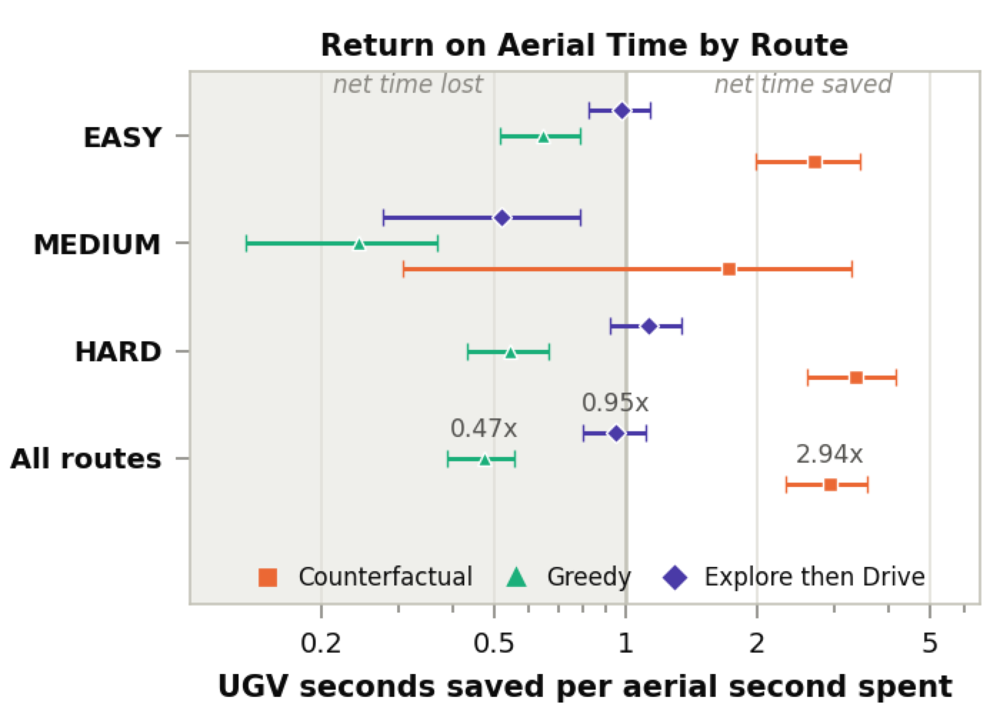
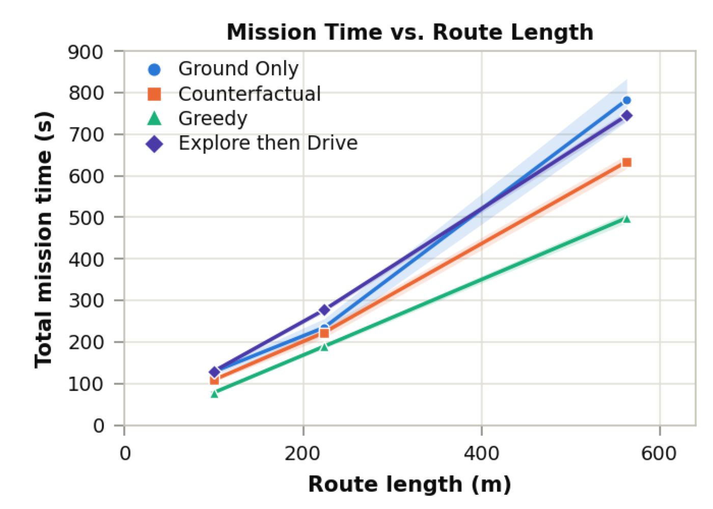
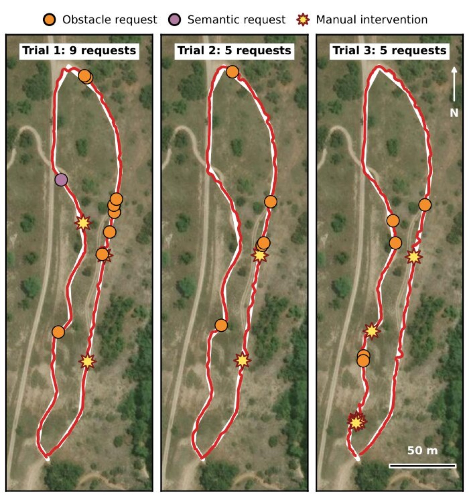
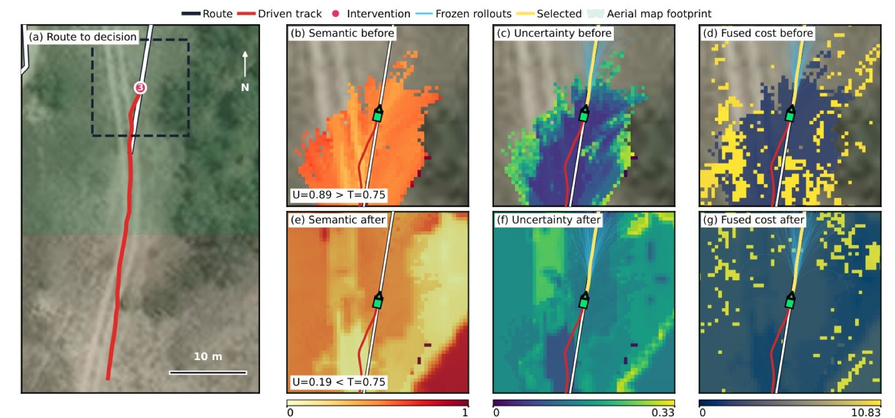
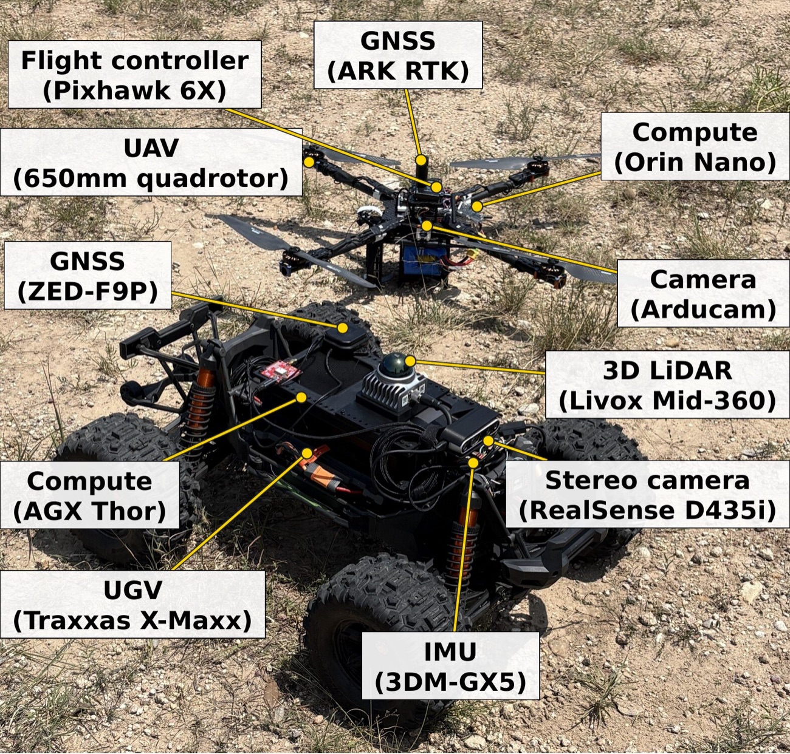

When to Ask for Help
Uncertainty-Triggered Aerial Refinement for Off-Road Navigation
The paper and code are withheld during double-blind review and will be linked here on acceptance.
Abstract
Heterogeneous air–ground teams can use aerial sensing to address the limited range and viewpoint of ground-vehicle sensors, but deciding when the UGV needs assistance and what information the UAV should collect remains a challenge. This paper presents a planner-conditioned air–ground assistance method that evaluates how uncertain map information affects the UGV's current MPPI rollouts. When navigation remains degraded, we score the same rollouts under resolved map hypotheses, select the map layer with the largest useful improvement, request the corresponding aerial measurement, fuse the returned information, and replan. Unlike approaches driven by fixed support roles, task structure, or uncertainty alone, our method conditions assistance on whether resolving uncertainty improves predicted ground navigation. Across 180 simulation trials on three off-road routes, the method achieves 98.9% goal attainment while reducing mean UAV flight time by 87.7% relative to continuous greedy aerial mapping. Aggregated across the routes, each second of estimated UAV flight time saves 2.94 s of UGV navigation time. Field experiments spanning approximately 2 km of UGV operation demonstrate uncertainty resolution and successful navigation recovery.
Method

The UGV keeps its navigation map layers separate — obstacle occupancy and semantic traversability — each with its own uncertainty representation, and fuses them into the cost map its MPPI planner uses. A scalar navigation score over the current rollout population summarizes whether the planner still has useful forward motion available.
A degraded score does not by itself call for a flight. When degradation persists, the system asks a counterfactual question of each uncertain layer: construct a plausible resolved version of that layer, rescore the same frozen rollouts under it, and measure the change in navigation score. Aerial assistance is requested only if some layer clears the intervention threshold, and the request names exactly the measurement that layer needs — a canopy-derived obstacle map or a semantic traversability estimate over a specific region of interest.
The UAV flies the region, geo-registers its imagery against an orthophoto, and returns the requested map. The UGV fuses it into the matching layer (Bernoulli evidence fusion for occupancy, inverse-variance-weighted Gaussian fusion for semantic cost), waits a fixed settling interval, rebuilds the planner representation, and replans. If no layer would change the outcome, no aerial request is made and the UGV keeps driving.
Results

UGV navigation time saved per second of aerial flight, referenced to matching Ground Only trials. Counterfactual returns 2.94 s per aerial second; greedy mapping returns 0.47 s. Bars: 95% bootstrap CI.

Total mission time vs. route length. Relative to Ground Only, Counterfactual is 10.4% faster, while Explore-then-Drive is 10.9% slower because it surveys before the rover moves. Bands: bootstrap 95% CI.

Three Ground Only field trials on the ~563 m route, marking where the policy would have requested obstacle (orange) or semantic (purple) aerial refinement, and where manual intervention was required.

One field request resolved. Vegetation along the route pushed semantic uncertainty past the 0.75 request threshold; fusing the returned aerial map dropped the diagnostic to 0.19 and autonomous navigation resumed.

Field platforms: an Ackermann-steered X-Maxx UGV (Livox Mid-360 LiDAR, RealSense D435i, Jetson AGX Thor) and a 650 mm quadrotor (Pixhawk 6X, Arducam HQ, Jetson Orin Nano Super), linked over an 802.11ah mesh.
Simulation
Three off-road routes in Gazebo, 30 runs per direction, 180 trials per policy. Counterfactual assistance keeps goal attainment within half a point of continuous greedy mapping while spending 31.5 s of flight per mission instead of 256.1 s — and unlike Explore-then-Drive, it does not pay for that sensing with a longer mission.
| Policy | Goal reached | Interventions | UGV time (s) | UAV flight (s) | Total mission (s) | Path (m) |
|---|---|---|---|---|---|---|
| Ground Only | 167/180 (92.8%) | 2.41 | 353.7 | — | 353.7 | 385.6 |
| UAV Counterfactual (ours) | 178/180 (98.9%) | 1.53 | 291.1 | 31.5 | 322.6 | 327.2 |
| Greedy | 179/180 (99.4%) | 1.61 | 256.1 | 256.1 | 256.1 | 295.9 |
| Explore then Drive | 180/180 (100%) | 1.57 | 255.3 | 128.3 | 383.6 | 294.8 |
Aggregate over all runs; means across trials. Total mission time includes sequential UAV mapping time.
In the field
We deployed the system at a rural site with hilly terrain, scattered shrubs and trees, tall grass, and pedestrian and vehicle trails — roughly 2 km of autonomous UGV operation. Offline evaluation over the unassisted runs identified 19 locations where the policy would have requested aerial evidence (18 obstacle-map requests, one semantic-map request).
During assisted runs the system issued eight requests and received six aerial maps; all six let the UGV resume autonomous navigation. The two dropped requests were network connectivity failures, not decision failures. The remaining obstacles were hardware ones: radio interference in the 900 MHz band, antenna placement, and dust and grass clogging the cooling on both vehicles.
BibTeX
@inproceedings{anonymous2027whentoask,
title = {When to Ask for Help: Uncertainty-Triggered Aerial Refinement
for Off-Road Navigation},
author = {Anonymous Authors},
booktitle = {Under review},
year = {2027}
}